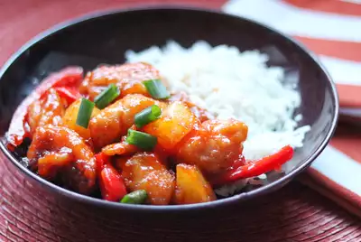

Peruvian Pineapple Chicken

Peruvian Pineapple Chicken
Recipe creator tooth describes this dish as "Fried and battered chicken medallions glazed in a sweet pineapple sauce mixed with pineapple chunks, slices of red bell pepper, and green onions with warm Latino spices. Serve with a side of white rice."
Ingredients
- 1 ½ tablespoons soy sauce
- 1 teaspoon salt
- ½ teaspoon ground black pepper
- ½ teaspoon garlic powder
- ½ teaspoon ground cumin
- 3 boneless, skinless chicken breasts, sliced into bite-sized medallions
- 1 (20 ounce) can pineapple chunks in syrup
- 1 ½ cups white sugar
- 2 cups potato starch, or as needed
- 1 tablespoon vegetable oil, or more as needed
- 1 teaspoon vegetable oil
- 2 tablespoons tomato paste
- 1 red bell pepper, cored and sliced
- 3 green onions, sliced
Steps
- Whisk soy sauce, salt, pepper, garlic powder, and cumin together in a large glass or ceramic bowl. Add chicken medallions and toss to evenly coat. Set aside to marinate.
- Combine pineapple chunks, syrup, and sugar in a medium pot over medium-high heat; bring to a boil. Boil until sugar has dissolved, 2 to 3 minutes. Remove from the stove, transfer pineapple chunks to a bowl, and leave syrup in the pot.
- Place potato starch in a bowl. Dredge marinated chicken medallions in potato starch; shake off excess.
- Heat 1 tablespoon vegetable oil in a large skillet over medium-high heat. Add chicken, working in batches and adding more oil if necessary, and fry until golden brown and crunchy, about 3 minutes per side. Transfer to a paper towel-lined plate.
- Heat remaining 1 teaspoon vegetable oil in a wok. Add tomato paste; cook and stir until paste darkens, being careful it does not burn. Add bell pepper and cook until slightly softened but still crispy, 1 to 2 minutes. Mix in chicken medallions and pineapple chunks. Slowly mix in some of the syrup until mixture is lightly glazed; reserve remaining syrup for another use. Sprinkle with green onions.